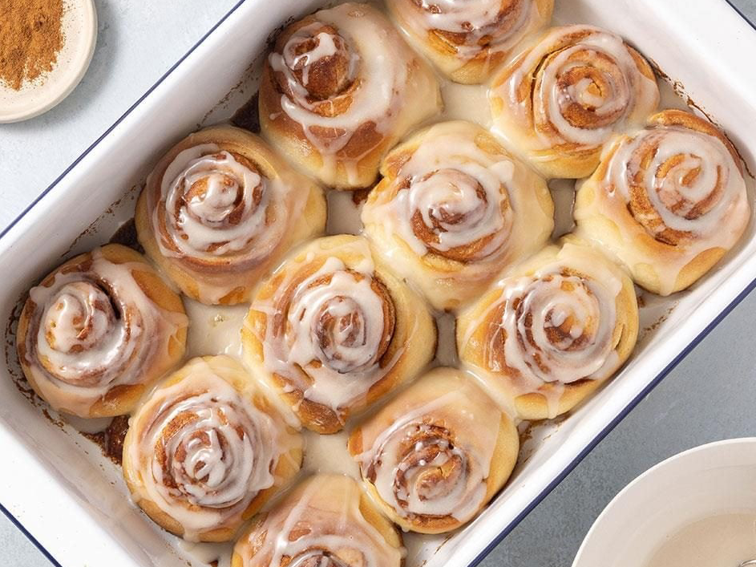

No Mixer Cinnamon Rolls

Making cinnamon rolls feels like some sort of "rite of passage" for home cooks in my opinion. It has many steps to follow, you have to proof your dough twice, rolling it can be messy, etc. But if you manage to pull it off, you will make everyone around beg for more and more rolls because of how delicious they are.
The problem is, so many recipes ask for a stand mixer or any kind of electrical utensil to which I don't have the means to get in my hands. But being broke has never stopped me from trying, and even if the mixing and technique gets a little more tiring, the results are almost the same as the ones made with a mixer. So if working hard for a bit doesn't sound as bad or you are just as broke as me, this is the perfect recipe for you!
Ingredients
For the Dough
- 2 3/4 cups (330g) all-purpose flour
- 1/4 cup granulated sugar 56g
- 2 tbsp (30g) butter, unsalted or salted
- 1 large egg
- 1 package (7g) active dry or instant yeast
- 1/2 (118ml) cup water
- 1/2 cup (59g) milk
- 1 tsp (4g) salt
For the Filling
- 2/3 cup (149g) brown sugar
- 1/4 cup (56g) butter, unsalted or salted
- 1 tbsp (15g) ground cinnamon
- 1 tsp (5ml) vanilla extract
For the Glaze
- 1 1/2 cups (180g) powdered sugar
- 1/4 cup (56g) butter
- 1 tsp (5ml) vanilla extract
- 2-3 tsp. (30-45ml) milk
Instructions
- Add the milk and water to small bowl and heat to 40-44 C. Add a teaspoon of the sugar with the yeast. Set aside and give it around 10 minutes until it gets foamy. This shows an activated and healthy yeast.
- In a medium bowl combine the flour and salt and set adide. Melt the butter and wait for it to be not that hot. Add it to the yeast with the rest of your sugar. Whisk to combine. If melted butter is too hot when pouring, it will kill the yeast.
- Add the yeast mixture to a large bowl and add the egg while whisking. After combined add the flour little by little. When it gets too thick, change to a spatula or wooden spoon. You will get a nice and bouncy dough. Knead on bowl with some extra flour to get the bits off the sides. Then pour it on a lightly floured surface.
- Knead the dough for 10-12 minutes. If it gets too sticky, add more flour. After this, put in a bowl with a bit of oil. Cover it with plastic wrap and let it rise for 1 hour or until doubled. When doubled, roll out the dough and baste the top with softened butter. Mix the cinnamon, brown sugar and vanilla extract to then sprinkle it on top of the butter. Roll up the dough tightly. This may take a couple of attemps, so please do it slowly.
- Cut the rolled dough into 12 rolls and place them in a oiled baking pan, cover with a plastic wrap and let them raise for about an hour.They should almost double in size.
- Remove the plastic wrap or cloth and baste the tops with butter then bake the rolls in a preheated oven (375 F/190 C) for 15 to 20 minutes until the rolls are golden brown. Once they are done allow them to cool.
- While the rolls are cooling make the glaze. Add the powdered sugar, melted butter, and vanilla extract, plus the milk, you can add another Tablespoon of milk if you want your glaze runnier. Then add the glaze to the top of the cinnamon rolls and they are done! Enjoy!